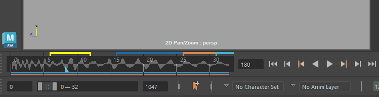

将播放范围更改为当前声音文件的持续时间
在“时间滑块”(Time Slider)上单击鼠标右键，然后在显示的弹出菜单中选择。

设定音频播放速度
- 单击“动画首选项”(Animation Preferences)按钮
 。
。
- 在“首选项”(Preferences)窗口中，设定“播放速度”(Playback Speed)选项。
只要未将速度设置设定为“播放每一帧”(Play every frame)，就会播放声音。
在播放期间禁用声音
-
双击播放选项(Playback Options)中的“音量”(Volume)图标
 以禁用声音，或在“音量”(Volume)图标上单击鼠标右键，然后选择“禁用”(Mute)。禁用声音后，“音量”(Volume)图标将显示“X”：
以禁用声音，或在“音量”(Volume)图标上单击鼠标右键，然后选择“禁用”(Mute)。禁用声音后，“音量”(Volume)图标将显示“X”： 。禁用音量等同于将音量设置为 0。双击“音量”图标 可重新激活声音设置。
。禁用音量等同于将音量设置为 0。双击“音量”图标 可重新激活声音设置。
- 从“动画”(Animation)菜单集 (F4) 中选择。
-
在“时间滑块”(Time Slider)上单击鼠标右键，然后选择。
访问音频节点的声音选项
- 从“动画”(Animation)菜单集 (F4) 的音频(Audio)菜单中选择声音文件。
-
在“时间滑块”(Time Slider)上单击鼠标右键，然后选择“音频 > <文件名>”(Audio > <filename>) >
 。
。
音频节点设置显示在“属性编辑器”(Attribute Editor)中。
创建音频偏移
请参见播放音频文件主题中的“创建音频偏移”。
播放多个音频文件
请参见播放音频文件主题中的“播放多个音频文件”和“在时间编辑器中偏移多个音频轨迹”部分。